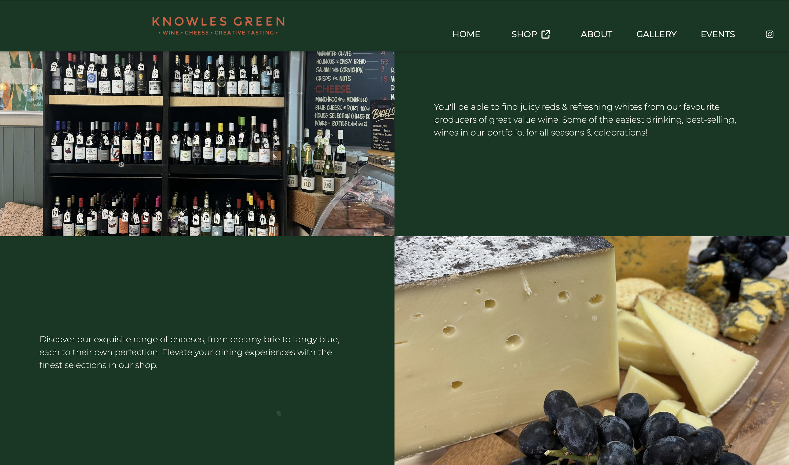
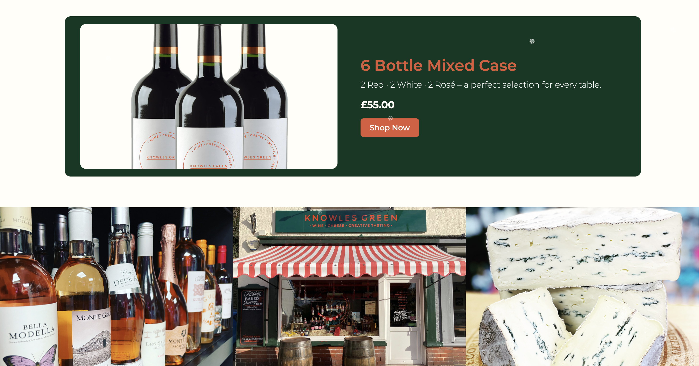

ABOUT THE PROJECT
Knowles Green
Wine & Cheese
I designed and developed the website for Knowles Green, a boutique wine and cheese delicatessen based in Bollington, Cheshire. The goal was to create an elegant, user-friendly platform that reflects the brand’s passion for fine food, wine, and hospitality. Alongside a clean, responsive layout and intuitive navigation, I set up a fully integrated online shop to showcase and sell their curated wines, cheeses, and gifts. Working closely with the owners, I focused on blending functionality with storytelling—using refined design, engaging visuals, and clear messaging to capture the warmth and quality of the Knowles Green experience both online and in-store.
ROLE
User experience designer
Web developer
CLIENT
Knowles Green Creative Tasting
DATE
Summer 2024 - Present

Visual Identity
Creating clean, elegant branding with refined fonts and warm, earthy tones to reflect the artisanal character of Knowles Green, a boutique cheese and wine shop.
Branding inspired by earthy sophistication, using deep green tones with orange highlights and a cream base to convey warmth, quality, and tradition.
TYPOGRAHY
Montserrat
Knowles
Aa123
COLOURS
#0e3723
#dd5a3a
#fffef7
